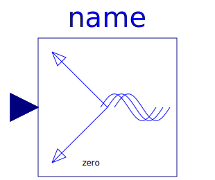
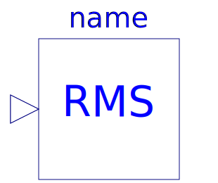

Space phasors are defined as vectors of length = 2, the first element representing the real part and the second element representing the imaginary part of the space phasor.
| Name | Description |
|---|---|
| Rotates space phasor | |
|
|
Conversion of multi phase instantaneous values to space phasors |
|  FromSpacePhasor | Conversion of space phasors to multi phase instantaneous values |
| Converts a space phasor to polar coordinates | |
| Converts a space phasor from polar coordinates | |
|  QuasiRMS | |
|
|
Sets angle to zero when length is below threshold |